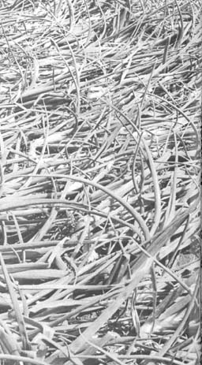

Once my onions are half-mature or older and l see one of or two developing split rings, I gently bend over ,the tons of all the plants. This action does seem to help keep the crop growing at a steadier rate.